TOSHIBA（東芝）/AUREX （オーレックス）
東芝が1970年代から1980年代にかけて、いわゆる一般の家電製品用の"TOSHIBA"とは別にオーディオ製品に用いたブランド名。東芝自体は現在もAV製品を作り続けているが、ビデオデッキ、ディスプレイ、DVDレコーダーなど映像関係を主力とし、純粋なオーディオ製品の大半は「オーレックス」ブランドで出していたため、こちらの名義で同社のヘッドフォンをまとめる。
Λコンデンサーや厚さ1mm（1000ミクロン）の無酸素銅板という極厚のプリント基盤を使用したアンプ
等で有名だったが、ヘッドフォンをはじめとするトランデュサー（変換器）では、コンデンサー型に注力していたメーカーであり、スタックスを除けばコンデンサー型ヘッドフォンの機種数を最も発表したメーカーである。またコンデンサー型ラウド・スピーカーこそないが、複数のコンデンサー型カートリッジを用意していたり、自社アンプにコンデンサー型カートリッジ専用の入力端子を設けていた時期がある。
ヘッドフォンでは1975年頃までは「東芝」名義で発表していたが、1975年以降、「オーレックス」名義で複数のコンデンサー型ヘッドフォンを発売した。しかしスタックスやコスのようなバイアス電圧を供給する純コンデンサー型は作らず、すべての製品がエレクトレット・コンデンサー型であった。また最上級機を除き、他社のエレクトレット・コンデンサー型のようなアダプター（外部トランスボックス）を用いず、小型トランスをホーンプラグ部分やコードの中間、ハウジング内部に納め、通常のヘッドフォンジャックに接続できる製品を作っていた。
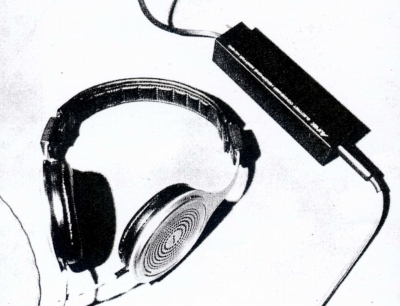
(1975年の製品発表会に展示されたHR-910のプロトタイプ。製品版とはヘッドパットやカプセルなど外装が異なる）
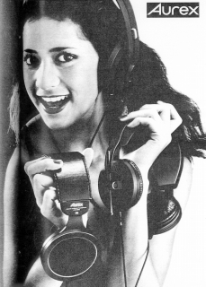
しかし1980年代に入り、他社がコンデンサー型や動電平面駆動型から離れていった時期に、オーレックスもまたコンデンサー型から離れていった。いかに小型・高能率のトランスを用いても能率面ではダイナミック型の敵ではなく、ましてウォークマンに代表されるポータブルオーディオではドライブが困難であること、製造歩留まりの悪さで低価格化に限界があったこと、ダイナミック型に比べ機械的にデリケートな部分があったことなどが考えられる。
コンデンサー型よりの撤退後は他社からのOEM調達と思われる機種をしばらく販売していたが、これといって特徴のある機種はなく、最後は再び、「東芝」名義での販売も行っていた。
AUREX
（オーレックス）の製品を以下のように分類する。（この分類は個人的な意見で、メーカーの分類ではありません）
なおオーレックスの1970年より以前の製品については資料が現時点では手元にほとんどない。
�T.東芝時代のモデル（〜1975年）
総合電気メーカーではよくあることだが、東芝もヘッドフォンについてオーディオ用ブランド「オーレックス」に切り替えるのはアンプやスピーカーより遅かった。東芝時代のモデルはエレガの系列を感じさせるモデルが多いが、クロスフィールド回路を内蔵（HR-50など）させるなど、独自色はあった。
（通常型）
HR-50 HR-50X HR-80 HR-80X HR-200 HR-200X HR-700
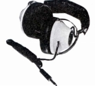
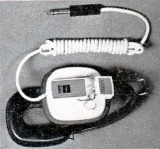
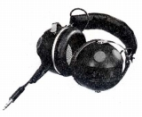
(左 HR-50 中央 HR-80X 右 HR-700)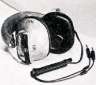
(HR-40X)�U.オーレックス時代のモデル
�@バックエレクレット・コンデンサー型時代
オーレックスはエレクットレット・コンデンサー型のうち、背極にエレクトレットを配したバックエレクトレット方式を採用した。その最初の世代。膜厚は上位機種で2.5ミクロン、下位機種で4ミクロンだった。
（コンデンサー型）
HR-710 HR-E7 HR-810 HR-910
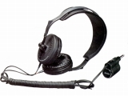
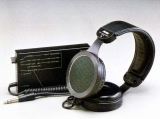
(左 HR-710 右 HR-910)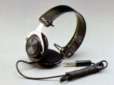
(HR-201)
�Aコンプリメンタリー・バックエレクレット・コンデンサー型時代
能率の向上の為、バックエレクトレット方式を改良しプラスとマイナスの２つのエレクトレットでプッシュプル駆動するコンプリメンタリー方式を採用した第２世代。
（コンデンサー型）
HR-F1 HR-XI HR-810�U HR-1000
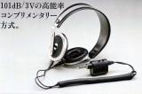
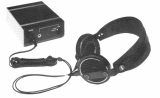
(左 HR-X1 右 HR-1000)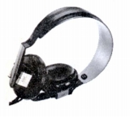
(HR-D2)�Bエレクレット・コンデンサー型末期のモデル
さらに能率の向上（101db/3V→107dB/3V)を目指しHS（ハイセンシティビティ）ユニットと呼ぶ新開発ユニットを投入した第３世代。昇圧トランスはヘッドバンドの付け根のカプセルの膨らみに収納した。しかし膜厚は4ミクロンに後退している。
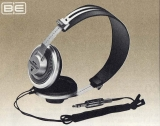
(HR-V9)
（通常型）
HR-MV1 HR-M5 HR-10M HR-D4 HR-D6 HR-D80
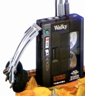
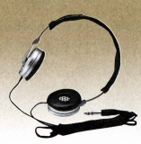
(左 HR-MV1 右 HR-D80)
�Cブランド終末期
1980年代中盤以降の総合電気系メーカーのオーディオから撤退の際に、東芝も「オーレックス」ブランドを縮小・消滅させた。
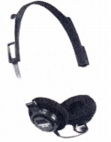
(HR-60M)�Dワイヤレス機
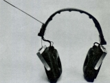
(HR-FM7)�V.東芝時代(1987年〜）
「オーレックス」ブランドから撤退した後、しばらくは「東芝」で製品を販売していた。
HP-P11 HR-10M(オーレックス時代のHR-10Mと同じものと思われる）
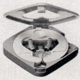
(HR-P11)＊モノラルタイプのヘッドフォンについて
「初期ラジカセの研究室」様の同社の1976年のラジカセのカタログで「HR-270（価格
2,000円）」というヘッドフォンが記載されています。また1978年のカタログには「HR-270D（価格
2,000円）」が記載されています。その他に1983年のカセットレコーダーのカタログに「HR-MM1（価格 3,000円）」が記載されています。
＊HR-50,HR-710について豊永尚輝氏所有機の画像を使用しました。ありがとうございます。